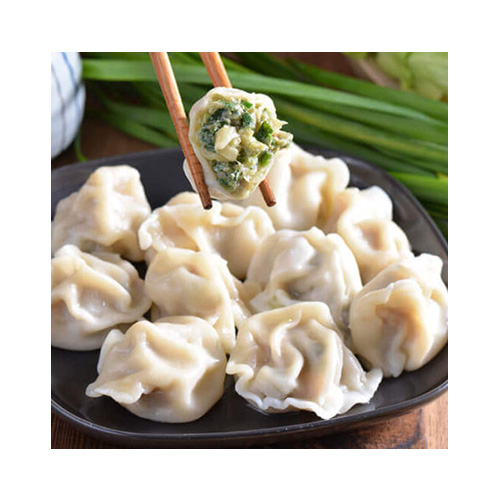
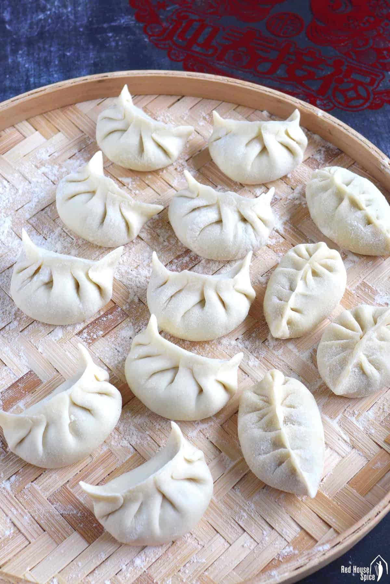
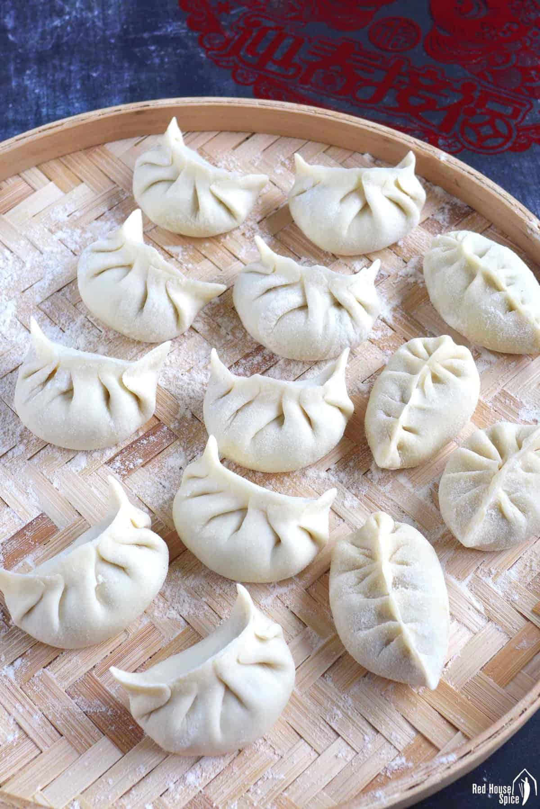

Double Chocolate Cookies
Origin: Michigan Source: Family Recipe Category: Dessert
My daughter learned to make these cookies at a baking camp at Zingermanns and has tweaked the recipe to fit the taste buds of her siblings. They are extremely sugary so the salt helps to balance it. Note, these cookies are best eaten very quickly.
Recipe Ingredients
- Unsalted butter
- Granulated Sugar
- Packed light or dark brown sugar
- Large egg
- Pure vanilla extract
- Semi-sweet chocolate chunks (melted)
- All-purpose flour
- Natural unsweetened cocoa powder
- Baking soda
- Salt
- Semi-sweet chocolate chunks
Recipe Steps
- In a mixing bowl cream together the butter, granulated sugar, and brown sugar
- Add the egg and vanilla extract and beat well
- Add the melted chocolate
- In a separate bowl combine the flour, baking soda, cocoa powder and salt
- Combine the wet and dry ingredients
- Add the unmelted chocolate chunks.
- Form 15 cookies and place on a baking sheet.
- Cook for 12 to 13 minutes at 350 degrees.
Additional Food images


Chinese Jiaozi
Origin: China Source: flour, pork and cabbage Category: Main Dish Chinese dumplings (Jiaozi, 饺子) are stuffed parcels made of unleavened dough and savory fillings consisting of minced ingredients like meat, egg, tofu, or vegetables. They can be boiled, pan-fried or steamed.
Recipe Ingredients
- Flour
- Water
- Pork
- Cabbage
Recipe Steps
- Dough
- Filling
- Folding
- Cooking
- Dipping sauces
Additional Food images
 


Chicken Curry
Origin: Japan Source: Family Recipe Category: Main Dish
Unlike Indian or Thai curry, Japanese curry is more savory than spicy. It’s an exemplary comfort food and one of the most-loved home-cooked dishes in Japan.
Recipe Ingredients
- skinless, boneless chicken breast
- 1 tablespoon olive oil
- 1 pinch salt and ground black pepper
- water
- 1 package curry sauce mix
- 1 can peas
- 5 new potatoes, halved
- 1 package sliced cremini mushrooms
- 2 medium carrots, chopped
- 1 medium onion, chopped
- 2 cups jasmine rice
Recipe Steps
- Place chicken in a large, deep skillet. Drizzle with olive oil and season with salt and pepper on both sides. Add 1/3 cup water to the pan, cover, and cook over medium heat until no longer pink in the center and the juices run clear, about 20 minutes.
- While chicken is cooking, pour 2 cups water into a microwave-safe bowl. Break curry sauce mix into pieces and add to water. Heat in the microwave on high for 3 1/2 minutes; remove and stir until sauce mix has completely dissolved.
- Remove chicken from the skillet. Cut into cubes, return to the skillet, and pour curry sauce over top. Stir in peas, potatoes, mushrooms, carrots, and onion. Bring to a boil, then lower heat and simmer until vegetables are tender, about 30 minutes.
- Meanwhile, bring remaining water and rice to a boil in a saucepan. Reduce heat to medium-low, cover, and simmer until rice is tender and water has been absorbed, 20 to 25 minutes.
- Scoop rice into bowls and serve curry on top.
Additional Food images